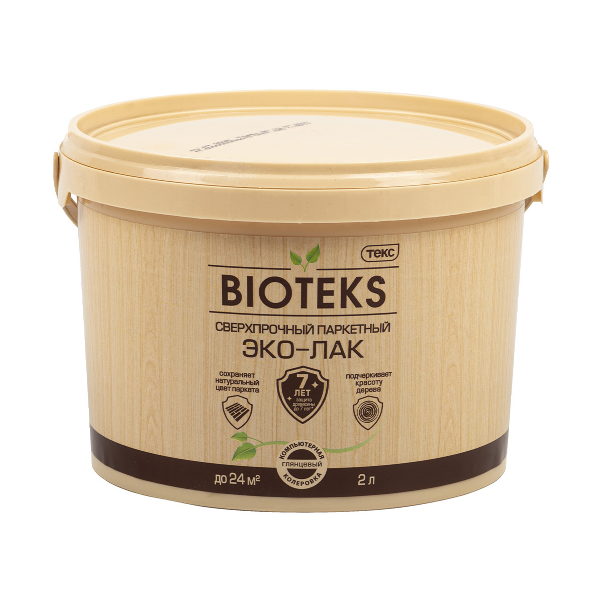
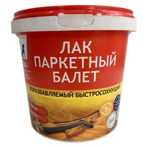
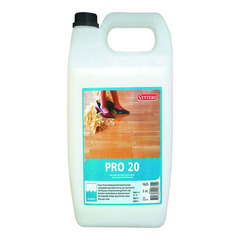
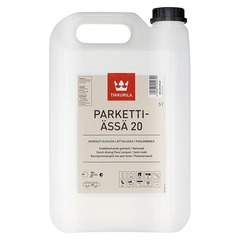
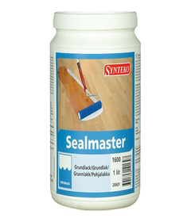
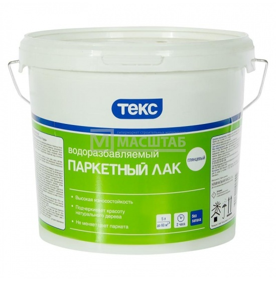
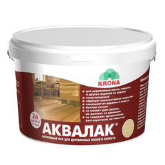

Рекомендованные лаки
Проверены за многие годы работы
Проверены за многие годы работы

Лак паркетный "БИО ТЕКС"
- Объём: 1-2-5л
- Блеск: Глянцевый , матовый
Водоразбавляемый износостойкий лак на акриловой основе для сухих помещений. После высыхания образует прозрачную, однородную, стойкую к истиранию, периодическому воздействию воды и бытовых химикатов пленку. Долговечность покрытия (не менее 7 лет) Колеровка пастами Avatint. Сверхпрочное покрытие.

ЛАК БАЛЕТ ЭМЛАК
- Объем: 1,1-2-2,8кг
- Тон: лак прозрачный, возможна колировка
- Блеск: матовый, полуглянцевый, глянцевый
- Россия
Очень хорошо подходит для защиты и подчёркивания текстуры деревянного пола.Отличный бюджетный отечественный аналог импортным лакам.
Воднодисперсионый акрил-полиуретановый паркетный лак. Для внутренних работ. Применяется для внутренней отделки, паркетных и шпунтованных полов, деревянных лестниц. Образует прочное, стойкое к истиранию покрытие, не желтеющее в процессе эксплуатации. Подчеркивает текстуру дерева.

ЛАК ПАРКЕТНЫЙ Synteco Pro 20
- Марка: SYNTEKO
- Объем: 1-5л
- Цвет: бесцветный
- Тип поверхности: дерево, брус
- Степень блеска: полуматовый 20
Однокомпонентный лак на водной основе. Используется на паркетных и деревянных полах в гостиных, спальнях, кухнях, прихожих и на лестницах. Можно использовать на необработанной пробке и прочих деревянных изделиях. На водной основе. Обладает высокой устойчивостью к воздействию бытовой химии. Не желтеет. Не имеет резкого запаха. Обладает высокой износостойкостью

ЛАК ПАРКЕТНЫЙ TIKKURILA Parketti-Assa 20
- Производство TIKKURILA
- Объем: 5л
- Цвет: бесцветный
- Тип основы: акриловая
- Тип поверхности: дерево
- Степень блеска: матовый, глянцевый
- Финляндия
Водоразбавляемый акриловый лак для внутренних работ. Предназначен для грунтовочной и покрывной лакировки и ремонта отшлифованных деревянных поверхностей внутри здания. Подходит также для ремонтной лакировки окрашенных ранее деревянных полов. Чтобы убедиться в правильности выбора материала для конкретной деревянной поверхности, рекомендуется сделать пробную выкраску. Не рекомендуется применять, например, на поверхности из алмазной сосны, дымчатого дуба и коричневого бука.

ГРУНТОВКА ПОД ЛАК SYNTEKO Sealmaster
- Марка SYNTEKO
- Объем: 1л
- Цвет: бесцветный
- Тип основы: акриловая
- Степень блеска: матовый
- Страна: Эстония
Базовая грунтовка, используемая для грунтования полов всех типов, так же совместим со всеми лаками на акриловой основе. Быстрое высыхание уменьшает зернистость и изменение цвета. Для внутренних работ. Уменьшает изменения цвета древесин, не желтеет, легко шлифуется. Снижает риск выцветания и возникновения следов, нахлестов лака.

ЛАК ПАРКЕТНЫЙ "ТЕКС ПРОФИ"
- Объем: 1-2-5л
- Цвет: глянцевый, матовый, полуматовый
- Водоразбавляемый
- Для работ внутри помещений
- Любой тип паркета/шпунта
- Россия
Водоразбавляемый износостойкий лак на акриловой основе для сухих помещений. Предназначен для лакирования деревянных и паркетных полов внутри сухих помещений с нормальной эксплуатационной нагрузкой. Применяется для отделки изделий из древесины. После высыхания образует прозрачную, однородную, стойкую к истиранию, периодическому воздействию воды и бытовых химикатов пленку.

ЛАК АКРИЛОВЫЙ АКВАЛАК
- Объем: 2л
- Цвет: бесцветный
- Тип основы: акриловая
- Тип поверхности: дерево, брус
- Степень блеска: глянцевый, полуглянцевый, матовый
- Россия
Один из самых бюджетных вариатнов. Применяется внутри зданий для паркетных и дощатых полов, лестниц, перил, а также других деревянных поверхностей, подвергающихся сильному износу. Образует прочное, стойкое к истиранию и влаге покрытие. Защищает пол от царапин и повреждений, не изменяет цвет дерева, не желтеет со временем. Придает поверхности насыщенность, быстро сохнет. Не содержит органических растворителей, экологичен.